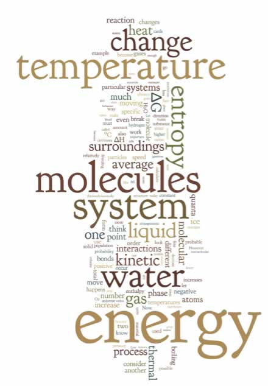
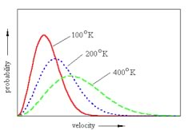

| Chapter 5: Systems Thinking – knowledge statements and learning goals |
Let us recap where we are: starting with the most basic units of matter, atoms (at least from a chemistry perspective) we have seen that:
|
 |
The ways that atoms interact depends upon the arrangements of the electrons within them. Different types of atoms have different “internal” arrangements of electrons. Temperature Kinetic energy Another way of thinking about temperature is that it is related to the energy of the particles in the sample – the faster the particles are moving the higher the temperature. It may well take different amounts of energy to get particles moving at the same average kinetic energy. For a simple monoatomic gas, like helium or neon, the only motion that the atoms can do is to move from one place to another - in a straight line - until they bump into something else, i.e. another atom or molecule. This kind of motion is called translational motion and is directly linked to the kinetic energy of the atom or molecule through the relationship EK(bar) = 1/2 mv(bar)2, where v(bar) is the average velocity of all of the molecules in the population, and m is the mass. In any given sample of moving atoms, there are collisions, but any individual collision does not alter the total energy of the system (that is what conserved means), but the relative kinetic energies of the two (or more) colliding atoms can change - if one slows down, the other will speed up (remember, we are now talking only about monoatomic species, things get more complicated with more complex molecules). Thinking about populations of molecules Within a population of atoms/molecules the many collisions that occur per second will lead to a range of speeds and directions (that is, velocities) of the atoms/molecules. When large numbers of particles are involved in a phenomenon, their individual actions are not important (although they are when individual molecules collide). We treat large numbers of molecules as a population; a population characterized in terms of a distribution, that is the number or probability of molecules moving with various velocities. This makes it possible to use statistical methods to characterize the behavior of the population. While any particular molecule will behave differently from one moment to the next, depending upon whether it collides with other molecules or not, the behavior of the population is quite predictable. This is an example of how the random behavior of individuals can give rise to lawful (that is predictable) behaviors of populations. From this population perspective, it is the distribution of kinetic energies of atoms or molecules that depends upon the temperature of the system, and as we will see, the molecular composition of the material. We will not concern ourselves with deriving the equations that describe these relationships, but rather focus on a general description of the behavior of the motions of atoms and ?molecules in various states of matter. We think you will find this quite comprehensible. |
Let us think about a population of molecules at a particular temperature, in the gas phase. Because of their constant collisions with one another, the population of molecules will have a distribution of speeds. We can calculate the probability of a particular molecule moving at a particular speed. This relationship is known as the Maxwell-Boltzmann distribution. Its shape is a function of the temperature of the system; typically it rises fairly steeply from zero (all of the curves begin at zero) to a maximum, which then decreases and tails off at higher velocities (or kinetic energies). |

|
| Since we are plotting the probability vs kinetic energy (or velocity or speed) we can set the area under the curve to be equal to 1. Why? because we are completely certain that each particle has some defined amount of kinetic energy (or velocity or speed), even if it is zero and even if we could not possibly know it (remember the uncertainty principle). As the temperature is increased the relative number of particles moving at higher speeds (with more kinetic energy) increases - the shape of the curve flattens out and becomes broader. That is, there are still molecules moving very slowly but there are relatively fewer of them. The most probable speed (the peak of the curve), and the average speed (which is a little higher since the curve is not symmetrical) increases as the temperature increases. | 5.1 Systems 5.2 Temperature 5.3 Vibrations 5.4 Phase changes 5.5 Thermodynamics 5.6 Phases, again |
Question to answer:
Questions to ponder:
|
| 28-Jun-2012 |